NN 0.02
PN -0.01
F1W 90.24
F1N 68.02
F1P 94.81
MCC 0.65
NEG-ANC 0.65
POS-NEG 0.46
POS-POS 0.96
ANC-ANC 0.93
NEG-NEG 0.95
NN 0.91
PN 0.75
NN 0.24
PN -0.14

| width | margin | loss_function | shuffle_dates | season_dates | Clean DS Sim NoEncoding | Clean DS FT Acc | Clean DS Train Sims | Clean DS Test Sims | Clean DS Segmentation | Test Sims | Test Sims Matrix | Segmentation |
|---|---|---|---|---|---|---|---|---|---|---|---|---|
| 30 | 0.5 | euclidean | True | False | PP 0.01 NN 0.02 PN -0.01 | ACC 91.86% F1W 90.98 F1N 70.00 F1P 95.29 MCC 0.69 | POS-ANC 0.95 NEG-ANC 0.66 POS-NEG 0.64 POS-POS 0.95 ANC-ANC 0.95 NEG-NEG 0.87 | PP 0.91 NN 0.82 PN 0.70 | 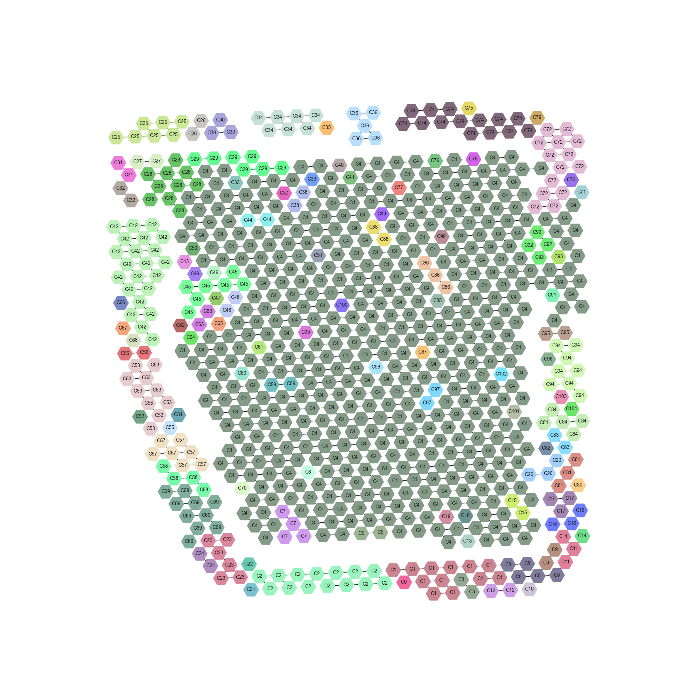 | PP 0.18 NN 0.27 PN -0.15 | 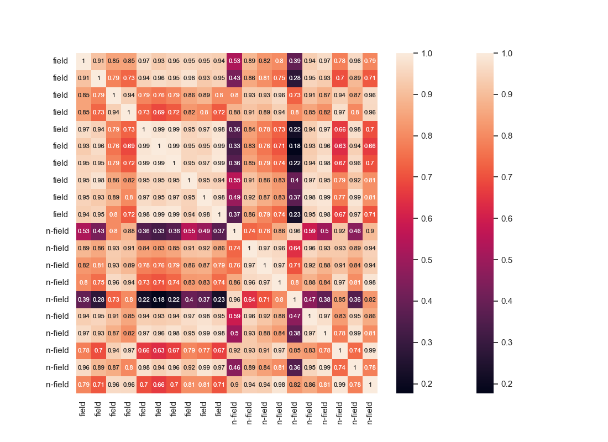 | 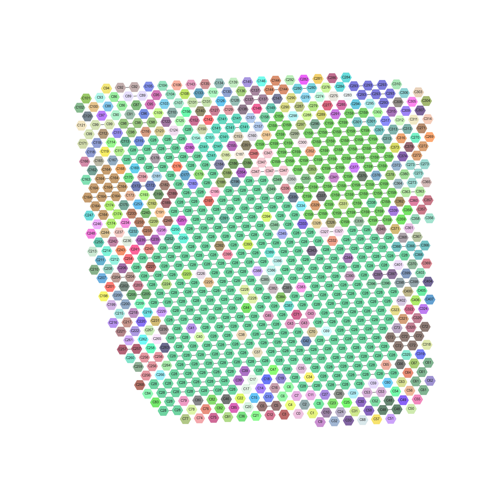 |
| width | margin | loss_function | shuffle_dates | season_dates | Clean DS Sim NoEncoding | Clean DS FT Acc | Clean DS Train Sims | Clean DS Test Sims | Clean DS Segmentation | Test Sims | Test Sims Matrix | Segmentation |
|---|---|---|---|---|---|---|---|---|---|---|---|---|
| 30 | 0.5 | cosine | True | False | PP 0.01 NN 0.02 PN -0.01 | ACC 91.07% F1W 90.24 F1N 68.02 F1P 94.81 MCC 0.65 | POS-ANC 0.91 NEG-ANC 0.65 POS-NEG 0.46 POS-POS 0.96 ANC-ANC 0.93 NEG-NEG 0.95 | PP 0.89 NN 0.91 PN 0.75 | 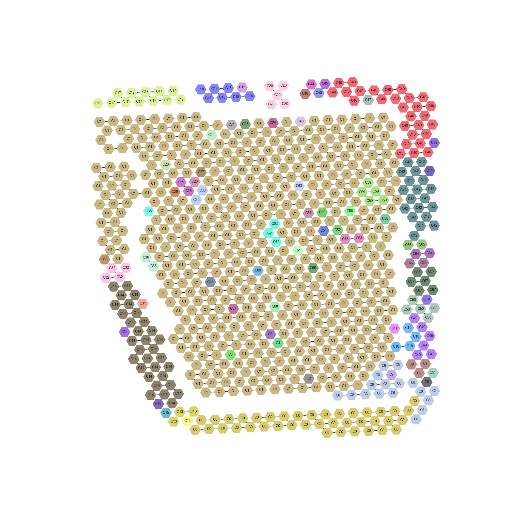 | PP 0.21 NN 0.24 PN -0.14 | 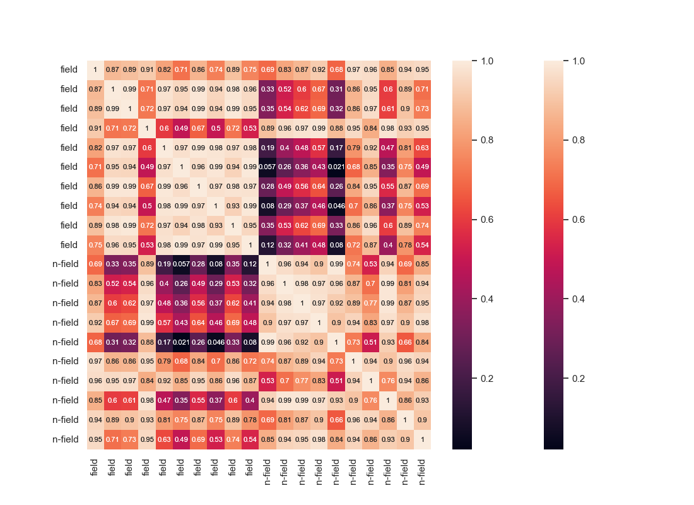 | |
| width | margin | loss_function | shuffle_dates | season_dates | Clean DS Sim NoEncoding | Clean DS FT Acc | Clean DS Train Sims | Clean DS Test Sims | Clean DS Segmentation | Test Sims | Test Sims Matrix | Segmentation |
|---|---|---|---|---|---|---|---|---|---|---|---|---|
| 30 | 0.5 | cosine | False | True | PP 0.17 NN 0.11 PN -0.02 | ACC 99.66% F1W 99.66 F1N 99.00 F1P 99.80 MCC 0.99 | POS-ANC 0.94 NEG-ANC 0.39 POS-NEG 0.32 POS-POS 0.98 ANC-ANC 0.97 NEG-NEG 0.96 | PP 0.97 NN 0.81 PN 0.49 | 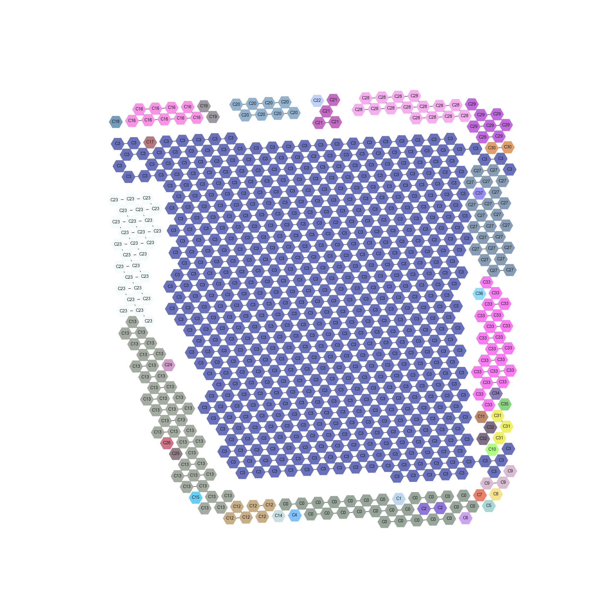 | PP 0.90 NN 0.74 PN 0.36 | 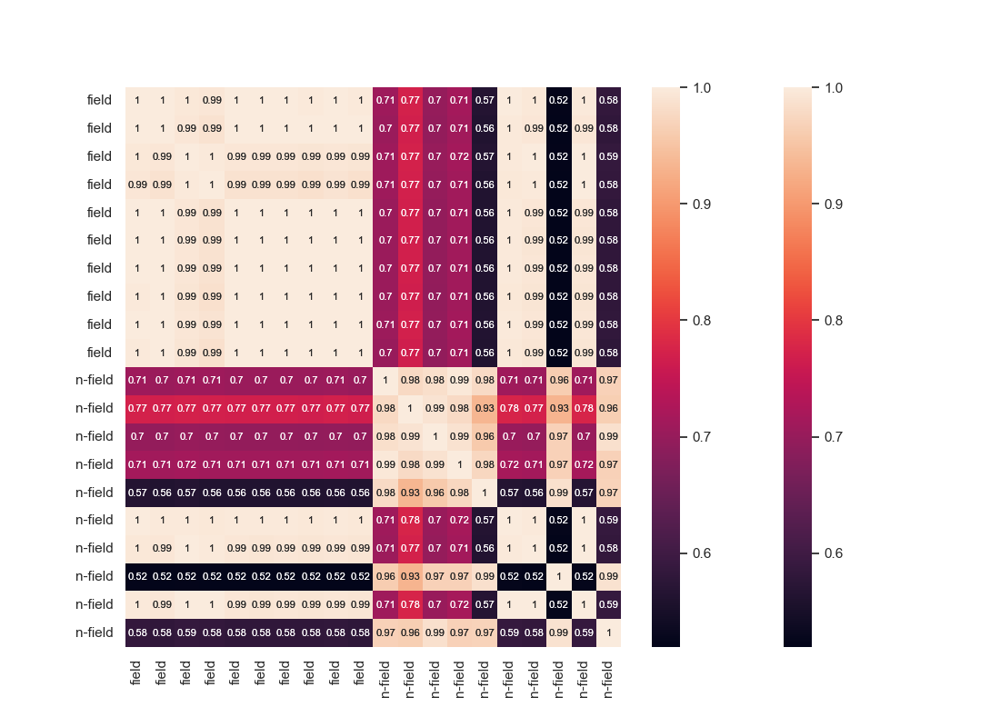 | 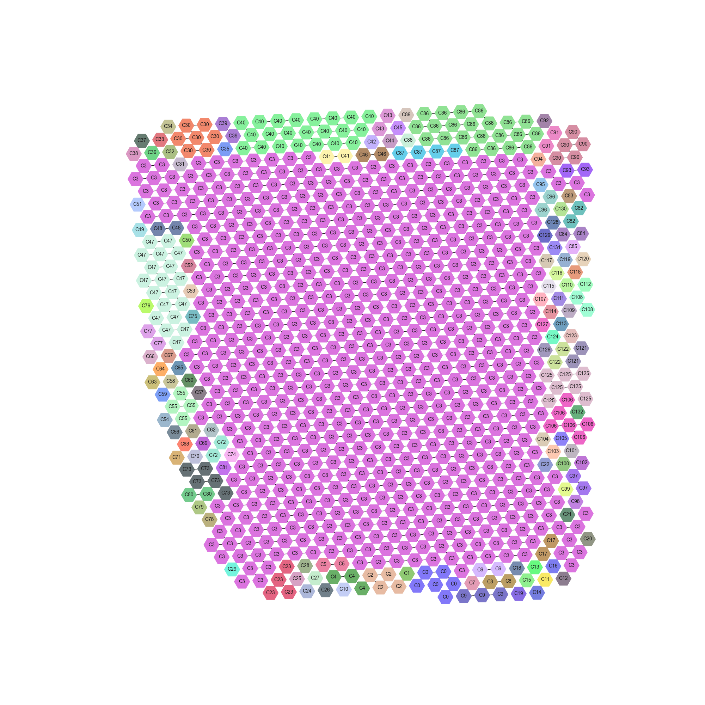 |
| width | margin | loss_function | sampling_method | Clean DS Sim NoEncoding | Clean DS FT Acc | Clean DS Train Sims | Clean DS Test Sims | Clean DS Segmentation | Test Sims | Test Sims Matrix | Segmentation |
|---|---|---|---|---|---|---|---|---|---|---|---|
| 30 | 0.5 | cosine | season | PP 0.17 NN 0.11 PN -0.02 | ACC 99.89% F1W 99.89 F1N 99.67 F1P 99.93 MCC 1.00 | POS-ANC 0.92 NEG-ANC 0.59 POS-NEG 0.47 POS-POS 0.98 ANC-ANC 0.94 NEG-NEG 0.94 | PP 0.97 NN 0.83 PN 0.61 | 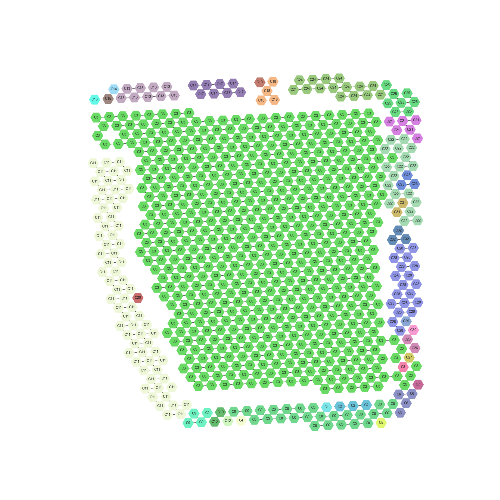 | PP 0.90 NN 0.74 PN 0.36 | 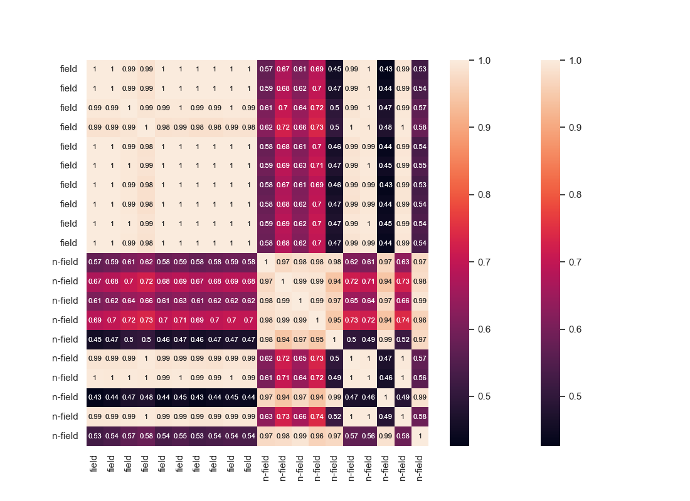 | 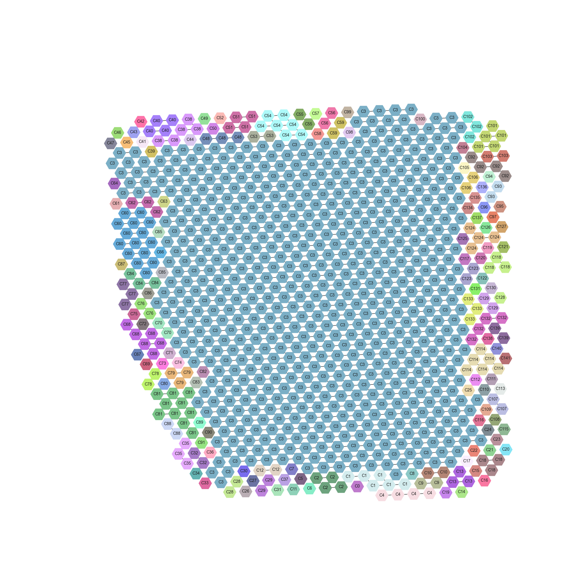 |